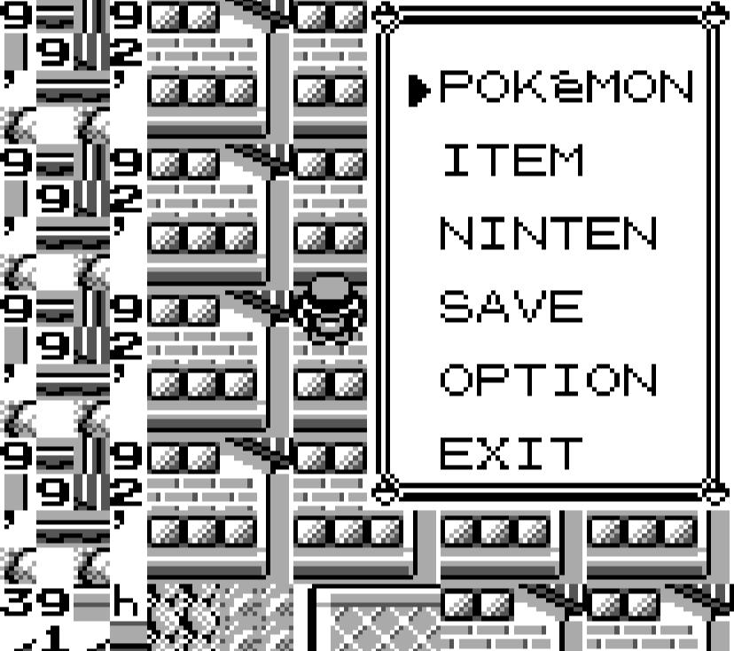
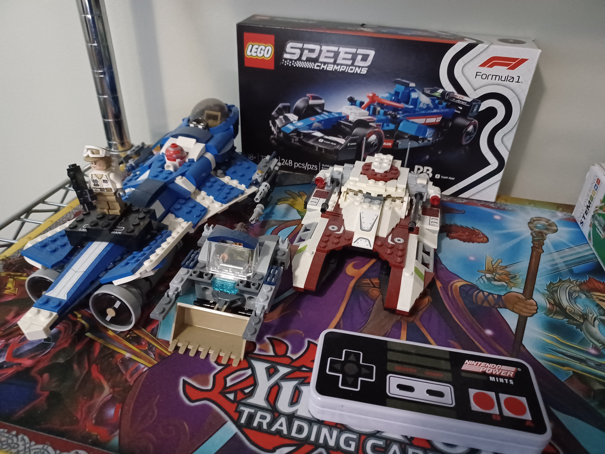

Home
One of my biggest hobbies is playing games, whether it be video games, board games, party games, etc with friends. I play a variety of genres of video games, though turn-based RPG's are a go-to of mine (like the Persona series) as the combat requires a bit of strategy (especially in boss fights) and it can be incredibly fun to find ways to make yourself incredibly overpowered and able to blitz through the rest of the game with ease. Aside from combat, the stories of these games are incredible with the Persona series in particular handling big concepts (like death or truth) in the form of their enemies, dungeons, and antagonists. The music of these games (at least in my opinion) are unrivaled by any other genre and used frequently in many forms of media as background music in videos to instill several ranges of emotion depending on what the content creator wants the consumer to feel. Overall, I am a major fan of turn-based RPG's and hope to eventually have the time to make a few myself (and hopefully think of some good ideas for them).

I have watched a lot of videos about glitches in video games whether old or new as I have a big interest in watching the ridiculous things people have done to break games wide open. These are used a lot in speedrunning to finish the game in a faster time and it's baffling to think not just the type of glitches used to beat the game, but also how the glitches themselves got found out in the first place. Typically these glitches are used to try and achieve ACE (or arbitrary code execution) to skip straight to the game's credits, but even the glitches not used in speedrunning can be more interesting with things like:
These types of things are an interest of mine as it's not just about how to make games or playing them a certain way, but trying to manipulate the game's code through the inputs you have.
Creating, tinkering, and learning how many things work has been an interest of mine since I was young. I frequently would build and play with legos, and as I grew up turned into me playing around with and making my own code for some games. Most of my experience with coding before college was in scratch and a little bit of python, but in scratch I had made a few games that ended up being pretty good considering my coding experience at the time and still used as an example for robotics classes in elementry school years later. For more information on my personal projects about coding, feel free to visit the Personal Projects page to see what I have made.

Top